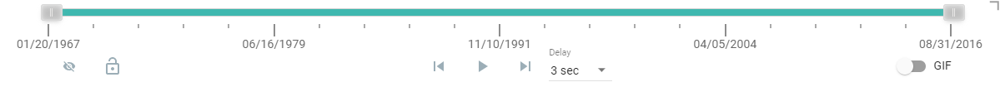
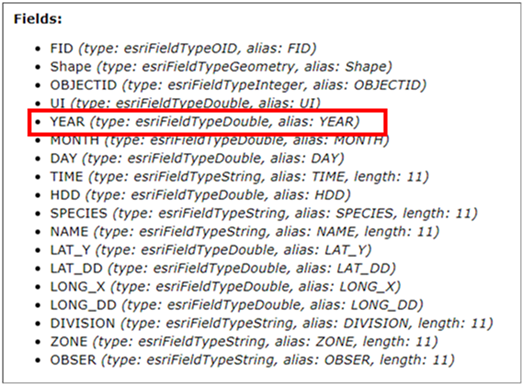
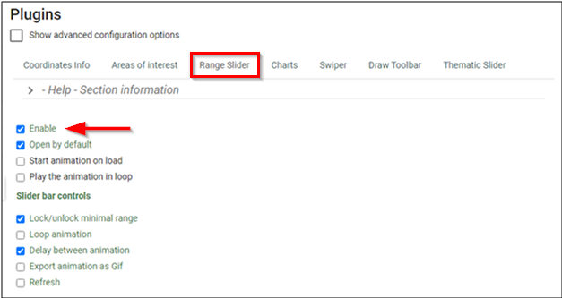
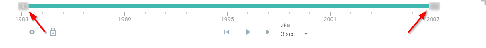
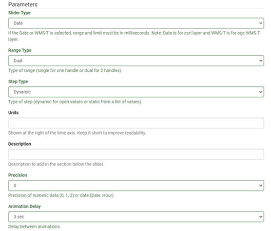
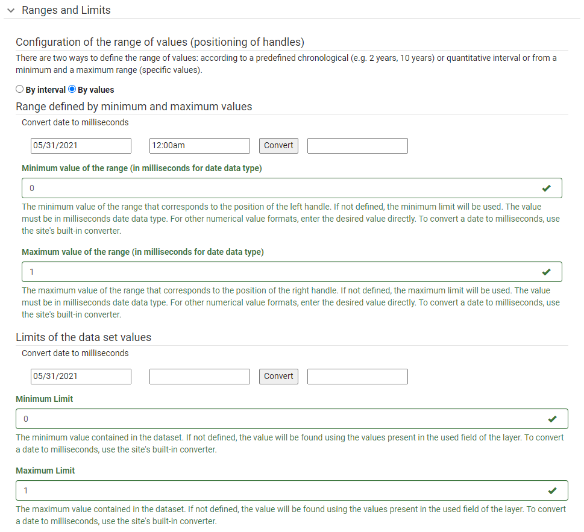
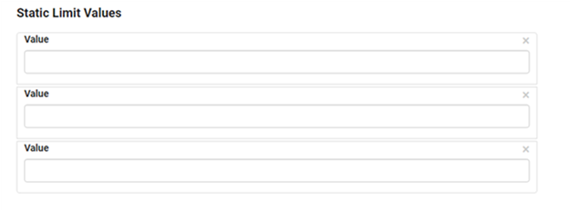
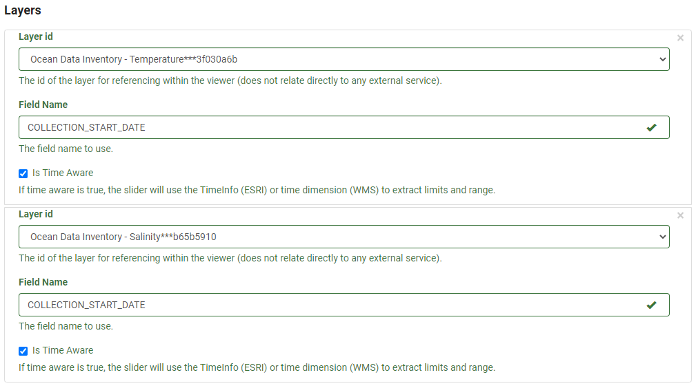

The Range/Time Slider offers a dynamic way to visualize time series data as well as non-time series data by “range”. It is also called Time Slider when used for time series visualization. The basic slider is a horizontal bar with anchors that can be moved to establish the range of the values to be used. To visualize data as a dynamic range, any layer that contains a date or numeric fields can be used. Once the range properties for the dataset are defined, an interactive, on-screen slider is rendered (Figure 14), which can be used to explore the data through a range/time in a customized manner. Using this plugin, the end-user can control the animation of the data with buttons to play and pause, go to the previous range/time, or go to the next range/time.

Figure 14: Range Slider Bar
Advantages of the Range/Time Slider
The ability to provide Time-Series Animation or Range filtering of the data dynamically using only one layer;
The ability to export an animation as a GIF;
Granular control over the time increment;
Lock or unlock the anchors when in step or play mode; and
Interactively view filtered results.
Tip:
Click on the top right corner to activate the compact mode
When to use it?
Getting the best out of the Range/Time Slider
The Range/Time Slider is best used to represent time series data that is embedded in a single layer.
Figure 15 shows the use of the Range Slider to visualize time series temperature data. The Range Slider uses the field “dStart” which corresponds to the start date of the data collected. Using the Range Slider, the entire dataset can be easily animated using a defined period. More information on the data source can be found from the metadata. By pressing the play button, the map will begin a time series animation based on the range set. This may be 1-year or 5-year increments. This is a useful ability to determine trends or patterns occurring within the dataset.
Figure 15: Map Showing Maximum Temperature
Other uses for the Range Slider
The Range Slider can also be used in cases where there is a map service or layer with a numeric field present.
Take, for example, Figure 16, the map layer for the dataset represents the general distribution of humpback whales in the Estuary and Gulf of St. Lawrence. The map service for this dataset has a few fields that can work with the Range/Time Slider plugin. In this example, the “Year” field was used (Figure 17), representing the time when the whale observation was made. More information on the data source can be found from the metadata.
Figure 16: Map Showing Humpback Whale Observations

Figure 17: Example of “Fields” from Map Service – Humpback Whales Observations
How to use it – A use case
Using the Ocean Data Inventory Temperature and Salinity datasets as a use case, below we demonstrate how we can configure a Range Slider (Figure 18).
Figure 18: Map Showing Ocean Data Inventory Temperature and Salinity
Using the left and right anchors of the Range Slider the data can be dynamically filtered to show specific time ranges. By clicking on the play button, the initial range set will be incremented by the specific duration. The user can set this duration at their discretion. At this point, the user can export a .gif animation that represents the time series data.
Tip:
Use the anchors on the left and right to see the range of values to be displayed.
Preparing the data
To get started we need to ensure that the data is prepared in a format that will work well with the Range Slider plugin. In particular, you may ask:
Is there a time field in the attribute table that makes this data an appropriate candidate for using Range Slider to create time series animation? As shown below, the attribute table does have a time field, i.e. COLLECTION_START_DATE.
Do the values under the time field in the correct format?
For time series animation, the range slider works best with a layer that has a time attribute in the attribute table. For example, this can be simply a year (1980) or date and time (1/1/1980 12:00:00).
For other use cases, once there is a numeric field present in the attribute table it will work with the Range Slider
In the use case, the values are formatted using ESRI date format.
Is the thematic layer served through this map service properly represented with respect to the color scheme, symbology, legend and projection? In the current case, the Temperature map, for example, shows appropriate designs for all the cartographic elements.
Step 1. Enable Range Slider
Navigate to the Plugins section in the FGP Authoring Tool. Under the Range Slider tab, click on Enable (Figure 19).

Figure 19: Range Slider - Enable
Select from the following options (Figure 19) to enable them depending on the intended use case:
Start the animation on load – This will run the animation as soon as the map loads
Play the animation in a loop – This will by default continue to loop through the animation.
Under Slider bar controls, choose the options that best suit the intended use case:
Lock/unlock a minimal range
Loop animation
Delay between animation
Export animation as GIF
Refresh
Step 2. Define Parameters (Figure 22)
Choose the Slider Type
Under the Slider Type, select one of the options, Number, or WMS-T. This corresponds to the map service type that will be used with the plugin.
Note
When using ESRI Image Service for the Layer Type, the Date Type option should be used
When using OGC WMS, WMS-T Type is selected.
When using either DATE or WMS-T, the Range and Limit MUST BE represented in milliseconds
Choose the Range Type:
Range Type refers to using one or two anchors for the slider.
Single: Only displays one anchor, which is used to set single ranges (Figure 20).
Figure 20: Range Slider - Single Anchor
Dual: Displays a left and right anchor. This allows for a range to be set using both anchors, which each can be adjusted to dynamically determine the sliding range (Figure 21).

Figure 21: Range Slider - Dual Anchors
Choose the Step Type:
Choose Dynamic where the ranges are automatically determined based on the time series data between the maximum and minimum limits.
Choose Static where static limit values can be specified. See Extra Steps to add Static values.
Note
Single Range Type would not work with Dynamic Step Type
Units - Define the unit of measure that corresponds with the data.
This unit of measure will be displayed on the right side of the slider. It is recommended that the unit be kept short or use a symbol. In our use case, we use the Celsius degree symbol as the unit for Temperature, and “g/kg” for Salinity.
Description – Provide some accompanying descriptive text
This section, located at the bottom of the toolbar, is used for adding extra descriptive content.
Precision – Provide desired precision level
Set the desired precision to be used by the Range Slider. There are options present to either set the number of decimal places when dealing with numerical data or use Date or Hour formats when displaying time-specific data.
Set the animation delay.
The default is 3sec.

Figure 22: Range Slider – Configure Parameters for the Use Case
Step 3. Define Range and Limits
Define the range and limits that correspond to the data. If the Slider Type is set to either (i) Date or (ii) WMS-T, the limits are defined using milliseconds as mentioned in Step 1. For our use case, the slider type was "number" (Figure 23).
Note
This step is not necessary if the slider type is set to NUMBER. A conversion tool is built into the Authoring Tool to allow for easy conversion between date and time into milliseconds.

Figure 23: Range Slider - Configure Range and Limits
Extra Step. Step Type as “Static”
Some layer types require extra inputs to be completed before they will load. If the Step Type is set to “Static” there will be an extra option available to set the individual steps for the data (Figure 24). There is no limit to the number of individual values that can be used.

Figure 24: Range Slider - Configure Static Limit
Step 4. Select Layer
Under Layers, select the layer with which the plugin will work. The Layer Id is automatically generated when adding a map service to the Authoring tool. Each layer will have a unique Id generated. Ensure that the layer to be used is being selected. In the use case, these layers are Temperature and Salinity (Figure 25).

Figure 25: Range Slider - Configure Layers
Populate the field name that the Range Slider will use to reference the data. In this use case example (Figure 25) the “COLLECTION_START_DATE” was used as mentioned earlier.
Note
The exact field name must be used, not the Alias
Definition of parameters
Listed in the following table are the definitions of all the parameters available when using the FGP Authoring Tool to configure the Range Slider.
Parameters
Description
General
Open
Determines if the plugin will open/load automatically when a layer loads. By default, it is set to open on map load
Autorun
Allows the animation to start automatically when the map loads.
Loop
Allows the animation to restart automatically when it reaches the end of the array
Slide Bar Controls
Lock
Lock or unlock left anchor when step or play
Loop
Loop the animation
Delay
Add a dropdown menu to change the delay in play animation
Export
Ability to export the animation to a GIF
Refresh
Reset the slider with the default values
Params
Type
Determines the type of slider (date, wmst or number) to be used. If date or wmst is selected, range and limit must be in milliseconds.
Range Type
Determines the type of range to be used. Single for one handle or Dual for two handles
Step Type
The type of step (dynamic for open values or static from a list of values)
Units
Allows you to display a unit of measure to the range slider. Shown at the right of the axis
Description
Allows you to add a short description to the slider. Shown at the bottom of the toolbar
Precision
Allows you to set the precision of the data.
Number - Set the precision for either 0,1,2 decimal places
Date or Wmst - Set the precision for either Date or Hour
Animation Delay
Sets the delay between animations in seconds
Range
Determines the minimum and maximum range values to be used in the plugin
Minimum - Set the minimum value for the range slider. If this is not set the minimum range will be determined from the field selected.
Maximum – Set the maximum value for the range slider. If this is not set the maximum range will be used
Limit
Determines the minimum and maximum limit values to be used in the plugin
Minimum - Set the minimum value for the range slider. If this is not set the minimum range will be determined from the field selected.
Maximum – Set the maximum value for the range slider. If this is not set the maximum range will be used
Static Items – This allows you to set an array of values to use for inner limits. This is only enabled when Step Type is set to "Static"
Layers
Id
Determines the layer id as defined in the layer section.
Field Name
Determines the field name of the field to be used to filter with the range slider. It is important to note that the field name has to be used and not the alias of the field.